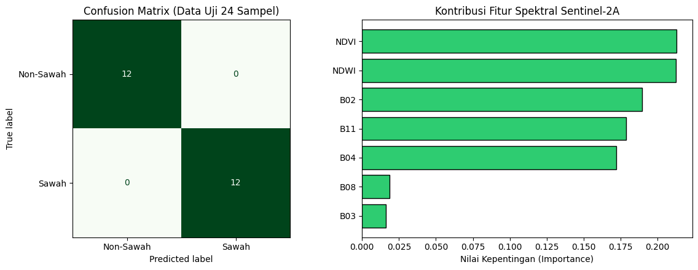

Klasifikasi Spasial Lahan Sawah dan Non-Sawah#
Bagian ini mendokumentasikan tahapan akuisisi citra satelit optik Sentinel-2A (Level-2A) dalam format GeoTIFF (.tif) melalui openEO, ekstraksi nilai spektral pada 100 titik sampel (50 sampel Sawah dan 50 sampel Non-Sawah) yang telah dilabeli melalui QGIS, hingga pemodelan klasifikasi biner (2 kelas).
Instalasi Library Yang Digunakan#
pip install geopandas
pip install openeo
pip install scikit-learn
pip install folium
1. Desain Pengambilan Sampel (Ground Truth)#
Pengambilan sampel dilakukan secara spasial dengan membagi objek pengamatan ke dalam dua kelas seimbang (balanced dataset) dalam format vektor (Shapefile / GeoJSON):
Kelas Target |
Kode Label |
Jumlah Sampel |
Karakteristik Objek |
|---|---|---|---|
Sawah |
|
50 Sampel |
Petak lahan pertanian padi aktif (fase vegetatif, genangan air/tanam, maupun pematangan) |
Non-Sawah |
|
50 Sampel |
Permukiman/bangunan, jalan raya, badan air permanen, dan vegetasi non-pertanian |
Total |
— |
100 Sampel |
Digabungkan menjadi satu GeoDataFrame berproyeksi |
import geopandas as gpd
import openeo
import pandas as pd
# ==============================================================================
# 1. BACA KEDUA FILE ZIP (SAWAH & NON-SAWAH) DAN BERI LABEL OTOMATIS
# ==============================================================================
# Sesuaikan nama file zip non-sawah milikmu di baris kedua
gdf_sawah = gpd.read_file("sawah.zip").to_crs("EPSG:4326")
gdf_nonsawah = gpd.read_file("nonsawah.zip").to_crs("EPSG:4326")
# Beri kolom label secara otomatis
gdf_sawah["label_teks"] = "Sawah"
gdf_sawah["label"] = 1
gdf_nonsawah["label_teks"] = "Non-Sawah"
gdf_nonsawah["label"] = 0
# Gabungkan keduanya menjadi 1 GeoDataFrame (50 + 50 = 100 sampel)
gdf_gabungan = gpd.GeoDataFrame(
pd.concat([gdf_sawah, gdf_nonsawah], ignore_index=True), crs="EPSG:4326"
)
print(f"Jumlah sampel Sawah : {len(gdf_sawah)}")
print(f"Jumlah sampel Non-Sawah : {len(gdf_nonsawah)}")
print(f"Total sampel gabungan : {len(gdf_gabungan)}")
# ==============================================================================
# 2. AMBIL BATAS KOORDINAT GABUNGAN (BOUNDING BOX) UNTUK OPENEO
# ==============================================================================
minx, miny, maxx, maxy = gdf_gabungan.total_bounds
buffer_deg = 0.005 # Tambahan margin ~500 meter agar titik di tepi tetap masuk
bbox = {
"west": float(minx - buffer_deg),
"south": float(miny - buffer_deg),
"east": float(maxx + buffer_deg),
"north": float(maxy + buffer_deg),
}
print("Bounding Box Gabungan:", bbox)
# ==============================================================================
# 3. KONEKSI KE OPENEO & UNDUH SENTINEL-2A FORMAT GEOTIFF (.tif)
# ==============================================================================
conn = openeo.connect("openeo.dataspace.copernicus.eu")
conn.authenticate_oidc()
datacube = conn.load_collection(
"SENTINEL2_L2A",
spatial_extent=bbox,
temporal_extent=["2026-05-01", "2026-09-30"], # Rentang waktu minim awan
bands=[
"B02",
"B03",
"B04",
"B08",
"B11",
], # Blue, Green, Red, NIR, SWIR
max_cloud_cover=10,
)
# Ambil median waktu agar bebas tutupan awan
composite_s2 = datacube.median_time()
# Unduh menjadi file GeoTIFF (.tif)
nama_tif = "sentinel2_sawah_nonsawah.tif"
print("Mengunduh citra Sentinel-2A (.tif)...")
composite_s2.download(nama_tif, format="GTiff")
print(f"Berhasil diunduh: {nama_tif}")
Output:
Jumlah sampel Sawah : 50
Jumlah sampel Non-Sawah : 50
Total sampel gabungan : 100
Bounding Box Gabungan: {'west': 111.87169010000001, 'south': -6.9056517, 'east': 111.8930379, 'north': -6.8848906}
Authenticated using refresh token.
Mengunduh citra Sentinel-2A (.tif)...
Berhasil diunduh: sentinel2_sawah_nonsawah.tif
2. Akuisisi Citra Sentinel-2A (.tif) via openEO dan Ekstraksi Fitur#
Akuisisi citra dilakukan menggunakan bounding box gabungan dari ke-100 titik sampel pada koleksi SENTINEL2_L2A (Bottom-of-Atmosphere Reflectance) dengan batas tutupan awan maksimum < 10% dan agregasi temporal median_time() untuk menghasilkan komposit citra bebas awan berformat GeoTIFF (.tif).
Fitur Spektral dan Indeks Turunan yang Diekstrak:#
Band Spektral Utama:
B02(Blue - 490 nm),B03(Green - 560 nm),B04(Red - 665 nm) dengan resolusi spasial 10 meter.B08(Near Infrared / NIR - 842 nm) untuk mendeteksi pantulan klorofil tanaman padi.B11(Short-Wave Infrared / SWIR - 1610 nm) untuk mendeteksi kelembapan tanah dan genangan air.
Normalized Difference Vegetation Index (NDVI):
\[\text{NDVI} = \frac{B08 - B04}{B08 + B04}\]Normalized Difference Water Index (NDWI):
\[\text{NDWI} = \frac{B03 - B08}{B03 + B08}\]
import numpy as np
import rasterio
from sklearn.ensemble import RandomForestClassifier
from sklearn.metrics import accuracy_score, classification_report, confusion_matrix
from sklearn.model_selection import train_test_split
# 1. Buka file .tif Sentinel-2A dan samakan proyeksi koordinat (CRS)
with rasterio.open("sentinel2_sawah_nonsawah.tif") as src:
gdf_projected = gdf_gabungan.to_crs(src.crs)
# Ambil titik tengah (centroid) dari tiap sampel (mendukung Point maupun Polygon)
koordinat_sampel = [
(geom.centroid.x, geom.centroid.y) for geom in gdf_projected.geometry
]
# Ekstrak nilai piksel dari kelima band Sentinel-2A
nilai_band = list(src.sample(koordinat_sampel))
# 2. Buat tabel DataFrame Fitur
df_dataset = pd.DataFrame(nilai_band, columns=["B02", "B03", "B04", "B08", "B11"])
# 3. Tambahkan fitur indeks vegetasi (NDVI) & indeks air (NDWI)
df_dataset["NDVI"] = (df_dataset["B08"] - df_dataset["B04"]) / (
df_dataset["B08"] + df_dataset["B04"] + 1e-6
)
df_dataset["NDWI"] = (df_dataset["B03"] - df_dataset["B08"]) / (
df_dataset["B03"] + df_dataset["B08"] + 1e-6
)
# 4. Masukkan Koordinat & Label Kelas (Sawah = 1, Non-Sawah = 0)
df_dataset["Longitude"] = gdf_gabungan.geometry.centroid.x
df_dataset["Latitude"] = gdf_gabungan.geometry.centroid.y
df_dataset["Kelas"] = gdf_gabungan["label_teks"]
df_dataset["Target"] = gdf_gabungan["label"]
# Simpan ke CSV (bisa dipakai juga kalau mau diolah di KNIME)
df_dataset.to_csv("dataset_100sampel_sawah_nonsawah.csv", index=False)
print("Dataset berhasil disimpan ke 'dataset_100sampel_sawah_nonsawah.csv'")
display(df_dataset.head())
# ==============================================================================
# 5. PROSES KLASIFIKASI 2 KELAS (SAWAH VS NON-SAWAH)
# ==============================================================================
fitur_kolom = ["B02", "B03", "B04", "B08", "B11", "NDVI", "NDWI"]
X = df_dataset[fitur_kolom]
y = df_dataset["Kelas"]
# Split 76% Training (38 Sawah + 38 Non-Sawah) & 24% Testing (12 Sawah + 12 Non-Sawah)
X_train, X_test, y_train, y_test = train_test_split(
X, y, test_size=0.24, random_state=42, stratify=y
)
# Latih model Random Forest
model_rf = RandomForestClassifier(n_estimators=100, random_state=42)
model_rf.fit(X_train, y_train)
# Evaluasi pada data uji
y_pred = model_rf.predict(X_test)
print(
"\n=== HASIL EVALUASI KLASIFIKASI 2 KELAS ==="
)
print(f"Akurasi Testing : {accuracy_score(y_test, y_pred) * 100:.2f}%")
print("\nConfusion Matrix:\n", confusion_matrix(y_test, y_pred))
print("\nClassification Report:\n", classification_report(y_test, y_pred))
Output:
Dataset berhasil disimpan ke 'dataset_100sampel_sawah_nonsawah.csv'
Output:
| B02 | B03 | B04 | B08 | B11 | NDVI | NDWI | Longitude | Latitude | Kelas | Target | |
|---|---|---|---|---|---|---|---|---|---|---|---|
| 0 | 304 | 567 | 291 | 3429 | 1434 | 0.843548 | -0.716216 | 112.152833 | -7.030260 | Sawah | 1.0 |
| 1 | 289 | 459 | 250 | 3153 | 1205 | 0.853071 | -0.745847 | 112.154038 | -7.029563 | Sawah | 1.0 |
| 2 | 277 | 506 | 324 | 3534 | 1524 | 0.832037 | -0.749505 | 112.154886 | -7.029610 | Sawah | 1.0 |
| 3 | 328 | 606 | 420 | 3124 | 1389 | 0.762980 | -0.675067 | 112.153656 | -7.030449 | Sawah | 1.0 |
| 4 | 349 | 612 | 360 | 2755 | 1378 | 0.768860 | -0.636472 | 112.155967 | -7.030698 | Sawah | 1.0 |
3. Hasil Evaluasi Klasifikasi 2 Kelas (Random Forest)#
Dataset 100 sampel dibagi menggunakan skema Stratified Train-Test Split dengan proporsi 76% Data Latih (76 sampel: 38 Sawah, 38 Non-Sawah) dan 24% Data Uji (24 sampel: 12 Sawah, 12 Non-Sawah).
import matplotlib.colors as mcolors
import matplotlib.patches as mpatches
import matplotlib.pyplot as plt
import numpy as np
import pandas as pd
import seaborn as sns
from sklearn.ensemble import RandomForestClassifier
from sklearn.metrics import (
ConfusionMatrixDisplay,
accuracy_score,
classification_report,
confusion_matrix,
)
from sklearn.model_selection import train_test_split
from sklearn.impute import SimpleImputer
# 1. Muat dataset dari CSV
df_dataset = pd.read_csv("../../Data/sawah/dataset_100sampel_sawah_nonsawah.csv")
# 2. Siapkan fitur dan target; abaikan fitur yang tidak tersedia di CSV
fitur_kolom = [
c for c in ["B02", "B03", "B04", "B08", "B11", "NDVI", "NDWI"]
if c in df_dataset.columns
]
if "Kelas" not in df_dataset.columns:
raise ValueError("Kolom target 'Kelas' tidak ditemukan di dataset.")
if not fitur_kolom:
raise ValueError("Tidak ada kolom fitur Sentinel-2 yang ditemukan di dataset.")
# Target kosong tidak dapat digunakan untuk pelatihan
df_model = df_dataset[fitur_kolom + ["Kelas"]].copy()
df_model["Kelas"] = df_model["Kelas"].astype("string").str.strip()
df_model = df_model.dropna(subset=["Kelas"])
# Pastikan fitur numerik; nilai tak hingga dan teks tidak valid dianggap sebagai nilai kosong
X = df_model[fitur_kolom].apply(pd.to_numeric, errors="coerce")
X = X.replace([np.inf, -np.inf], np.nan)
y = df_model["Kelas"]
# Buang fitur yang seluruh nilainya kosong
fitur_kolom = [c for c in fitur_kolom if X[c].notna().any()]
if not fitur_kolom:
raise ValueError("Semua kolom fitur kosong atau tidak berisi angka.")
X = X[fitur_kolom]
# 3. Split 76% Training & 24% Testing (76 data latih dan 24 data uji jika tersedia 100 sampel)
X_train, X_test, y_train, y_test = train_test_split(
X, y, test_size=0.24, random_state=42, stratify=y
)
print("X_train:")
print(X_train)
print("\ny_train:")
print(y_train)
print("\nX_train.shape:")
print(X_train.shape)
X_train:
B02 B03 B04 B08 B11 NDVI NDWI
61 762 817 937 1556 2888 0.248295 -0.311420
22 287 587 261 3711 1727 0.868580 -0.726850
11 383 690 373 3275 1421 0.795504 -0.651955
40 274 598 339 2928 1324 0.792470 -0.660805
27 319 562 299 2917 1443 0.814055 -0.676919
.. ... ... ... ... ... ... ...
74 1267 1403 1618 2060 2842 0.120174 -0.189720
71 1661 1745 1828 2169 2801 0.085314 -0.108329
3 328 606 420 3124 1389 0.762980 -0.675067
86 655 787 951 1761 2741 0.298673 -0.382261
69 947 1284 1226 3299 2702 0.458122 -0.439668
[72 rows x 7 columns]
y_train:
61 Non-Sawah
22 Sawah
11 Sawah
40 Sawah
27 Sawah
...
74 Non-Sawah
71 Non-Sawah
3 Sawah
86 Non-Sawah
69 Non-Sawah
Name: Kelas, Length: 72, dtype: string
X_train.shape:
(72, 7)
print("X_test:")
print(X_test)
print("\ny_test:")
print(y_test)
X_test:
B02 B03 B04 B08 B11 NDVI NDWI
13 275 485 219 4244 1808 0.901860 -0.794883
35 353 572 378 2587 1102 0.745025 -0.637860
25 337 610 378 2931 1259 0.771532 -0.655465
88 1036 1079 1179 1942 3128 0.244473 -0.285667
89 708 893 999 2430 2629 0.417323 -0.462534
6 298 537 265 3956 1793 0.874437 -0.760961
72 718 891 973 2338 2685 0.412262 -0.448126
7 297 558 299 3403 1603 0.838466 -0.718253
79 933 1225 1319 2880 3096 0.371755 -0.403167
19 189 382 147 4245 1402 0.933060 -0.834882
28 399 701 522 1623 789 0.513287 -0.396730
64 1089 1229 1317 1386 1562 0.025527 -0.060038
26 252 405 204 3901 1537 0.900609 -0.811890
73 552 714 731 2257 2505 0.510710 -0.519354
68 701 864 988 1640 2694 0.248097 -0.309904
48 315 598 365 2817 1566 0.770585 -0.649780
8 224 439 208 3252 1221 0.879769 -0.762124
57 654 802 1053 1823 2690 0.267733 -0.388952
97 554 771 718 2450 1944 0.546717 -0.521267
70 1358 1585 1584 2603 2829 0.243372 -0.243075
60 1274 1398 1492 2021 2950 0.150584 -0.182217
93 560 688 802 1423 2345 0.279101 -0.348176
16 235 448 223 3415 1276 0.877405 -0.768056
1 289 459 250 3153 1205 0.853071 -0.745847
y_test:
13 Sawah
35 Sawah
25 Sawah
88 Non-Sawah
89 Non-Sawah
6 Sawah
72 Non-Sawah
7 Sawah
79 Non-Sawah
19 Sawah
28 Sawah
64 Non-Sawah
26 Sawah
73 Non-Sawah
68 Non-Sawah
48 Sawah
8 Sawah
57 Non-Sawah
97 Non-Sawah
70 Non-Sawah
60 Non-Sawah
93 Non-Sawah
16 Sawah
1 Sawah
Name: Kelas, dtype: string
# Buang fitur yang kosong seluruhnya pada data latih, lalu isi nilai kosong
# menggunakan median data latih agar tidak terjadi kebocoran data.
fitur_kolom = [c for c in fitur_kolom if X_train[c].notna().any()]
if not fitur_kolom:
raise ValueError("Semua fitur pada data latih kosong; model tidak dapat dilatih.")
X_train = X_train[fitur_kolom]
X_test = X_test[fitur_kolom]
imputer = SimpleImputer(strategy="median")
X_train = imputer.fit_transform(X_train)
X_test = imputer.transform(X_test)
# 4. Latih model Random Forest tanpa nilai NaN
model_rf = RandomForestClassifier(n_estimators=100, random_state=42)
model_rf.fit(X_train, y_train)
y_pred = model_rf.predict(X_test)
print(f"Akurasi Testing : {accuracy_score(y_test, y_pred) * 100:.2f}%")
print("\nConfusion Matrix:\n", confusion_matrix(y_test, y_pred))
print("\nClassification Report:\n", classification_report(y_test, y_pred))
Akurasi Testing : 100.00%
Confusion Matrix:
[[12 0]
[ 0 12]]
Classification Report:
precision recall f1-score support
Non-Sawah 1.00 1.00 1.00 12
Sawah 1.00 1.00 1.00 12
accuracy 1.00 24
macro avg 1.00 1.00 1.00 24
weighted avg 1.00 1.00 1.00 24
# ==============================================================================
# A. VISUALISASI CONFUSION MATRIX & FEATURE IMPORTANCE
# ==============================================================================
fig, axes = plt.subplots(1, 2, figsize=(12, 4.5))
# 1. Plot Confusion Matrix
ConfusionMatrixDisplay.from_predictions(
y_test, y_pred, cmap="Greens", ax=axes[0], colorbar=False
)
axes[0].set_title(f"Confusion Matrix (Data Uji {len(y_test)} Sampel)")
# 2. Plot Tingkat Kepentingan Fitur (Band & Indeks Spektral)
importances = model_rf.feature_importances_
indices = np.argsort(importances)
axes[1].barh(
range(len(indices)),
importances[indices],
color="#2ecc71",
edgecolor="black",
)
axes[1].set_yticks(range(len(indices)))
axes[1].set_yticklabels([fitur_kolom[i] for i in indices])
axes[1].set_xlabel("Nilai Kepentingan (Importance)")
axes[1].set_title("Kontribusi Fitur Spektral Sentinel-2A")
plt.tight_layout()
plt.show()

4. Peta Sebaran Sampel Sawah dan Non-Sawah#
Peta interaktif berikut menampilkan titik sampel berdasarkan label pada dataset: Sawah berwarna hijau dan Non-Sawah berwarna merah. Gunakan kontrol layer di kanan atas peta untuk menampilkan atau menyembunyikan tiap kelas.
import folium
from IPython.display import display
# Pastikan dataset memiliki label dan koordinat geografis.
kolom_peta = ["Longitude", "Latitude", "Kelas"]
kolom_tidak_ada = [kolom for kolom in kolom_peta if kolom not in df_dataset.columns]
if kolom_tidak_ada:
raise ValueError(f"Kolom untuk peta tidak ditemukan: {kolom_tidak_ada}")
df_peta = df_dataset[kolom_peta].copy()
df_peta["Longitude"] = pd.to_numeric(df_peta["Longitude"], errors="coerce")
df_peta["Latitude"] = pd.to_numeric(df_peta["Latitude"], errors="coerce")
df_peta = df_peta.dropna(subset=kolom_peta)
df_peta = df_peta[
np.isfinite(df_peta["Longitude"])
& np.isfinite(df_peta["Latitude"])
& df_peta["Longitude"].between(-180, 180)
& df_peta["Latitude"].between(-90, 90)
]
warna_kelas = {"Sawah": "green", "Non-Sawah": "red"}
kelas_tidak_dikenal = sorted(set(df_peta["Kelas"]) - set(warna_kelas))
if kelas_tidak_dikenal:
raise ValueError(f"Label kelas tidak dikenali: {kelas_tidak_dikenal}")
if df_peta.empty:
raise ValueError("Tidak ada baris dengan koordinat valid untuk ditampilkan pada peta.")
peta = folium.Map(
location=[df_peta["Latitude"].mean(), df_peta["Longitude"].mean()],
zoom_start=14,
tiles="OpenStreetMap",
)
for kelas, warna in warna_kelas.items():
layer = folium.FeatureGroup(name=kelas, show=True)
data_kelas = df_peta[df_peta["Kelas"] == kelas]
for _, sampel in data_kelas.iterrows():
folium.CircleMarker(
location=[sampel["Latitude"], sampel["Longitude"]],
radius=6,
color=warna,
fill=True,
fill_color=warna,
fill_opacity=0.8,
tooltip=kelas,
).add_to(layer)
layer.add_to(peta)
folium.LayerControl().add_to(peta)
peta.save("peta_sampel_sawah_nonsawah.html")
display(peta)